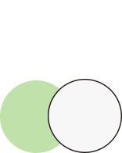

數位民主實驗平台
這是一場數位民主的實驗。
在這裡，我們共同營造知情理性的網路公共平台，鼓勵彼此聆聽、溝通對話，以及系統性思考。在這裡，我們追求的不是流量與聲量，不用大聲對立，而是試圖理解彼此的想法，共同探尋社會願景。
歡迎您一起參與青平台基金會的實驗，加入深化數位民主的討論。我們一起縫合社會的裂縫，促進社會團結，讓民主社會永續發展。

在這裡，我們共同營造知情理性的網路公共平台，鼓勵彼此聆聽、溝通對話，以及系統性思考。在這裡，我們追求的不是流量與聲量，不用大聲對立，而是試圖理解彼此的想法，共同探尋社會願景。
歡迎您一起參與青平台基金會的實驗，加入深化數位民主的討論。我們一起縫合社會的裂縫，促進社會團結，讓民主社會永續發展。